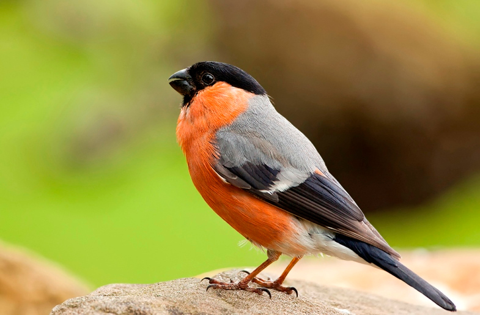
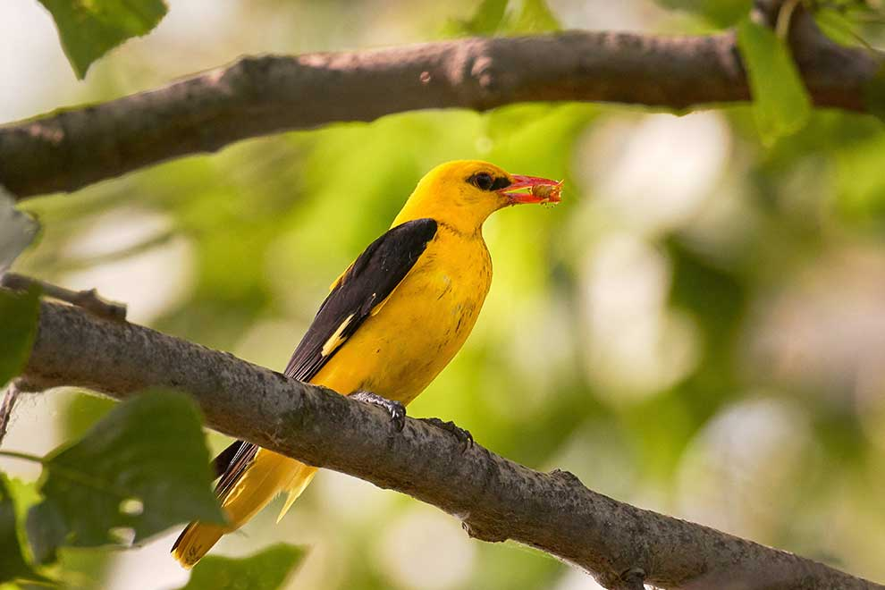
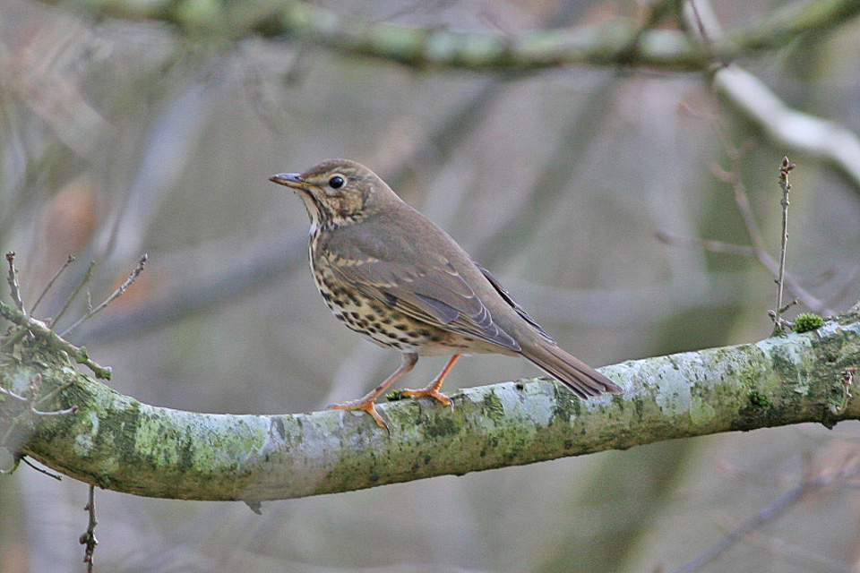

Gil zwyczajny, gil (Pyrrhula pyrrhula) – gatunek małego ptaka z rodziny łuszczakowatych (Fringillidae), zamieszkujący Eurazję. Nie jest zagrożony.

Gil
Śpiew gila
Szpak
Szpak zwyczajny, szpak (Sturnus vulgaris) – gatunek średniej wielkości ptaka z rodziny szpakowatych (Sturnidae). Częściowo wędrowny. Pierwotnie zamieszkiwał wyłącznie Eurazję. Nie jest zagrożony wyginięciem. Dzięki introdukcji gatunek kosmopolityczny, w 13 podgatunkach występuje na każdym kontynencie poza Antarktydą; poza rodzimym zasięgiem także w Ameryce Północnej (od Jukatanu po Alaskę), Argentynie, Południowej Afryce, wschodniej Australii, Nowej Zelandii i okolicznych wyspach. Jest to gatunek inwazyjny.
Szpak
Śpiew szpaka
Wilga
Wilga zwyczajna, wilga (Oriolus oriolus) – gatunek średniej wielkości ptaka wędrownego z rodziny wilgowatych (Oriolidae), jedyny z tej rodziny rozmnażający się w północnej strefie umiarkowanej. Nie jest zagrożony wyginięciem.

Wilga
Śpiew wilga
Śpiewak
Drozd śpiewak, śpiewak (Turdus philomelos) – gatunek średniej wielkości ptaka z rodziny drozdowatych (Turdidae), zamieszkującego Eurazję. Wierzch ciała brązowy o ciepłym odcieniu, kuper i pokrywy nadogonowe oliwkowe, ogon i wierzch głowy pomarańczowobrązowe. Spód ciała kremowy z gęstymi brązowymi plamkami. Wyróżnia się trzy podgatunki. Do jego charakterystycznej piosenki, w której powtarza muzyczne frazy, często odnoszono się w poezji.

Śpiewak
Śpiew śpiewaka
Jaskółka
Oknówka zwyczajna, oknówka, jaskółka oknówka (Delichon urbicum) – niewielki gatunek ptaka wędrownego z rodziny jaskółkowatych (Hirundinidae). Zamieszkuje niemal całą Eurazję oraz część północnej Afryki. Zimuje w Afryce Subsaharyjskiej i w tropikalnej części Azji. Żywi się owadami, które złapie w locie. Migruje na obszary, gdzie insekty latające występują obficie. Głowę i wyższe partie ciała ma czarne z niebieskim połyskiem, biały kuper i dolne partie ciała. Występuje zarówno na otwartych terenach, jak i w pobliżu siedzib ludzkich. Jest podobny pod względem morfologicznym do dwóch innych gatunków jaskółek z rodzaju Delichon, które występują we wschodniej i południowej Azji. Powszechnie akceptowane są, przez większość badaczy, trzy podgatunki.